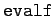
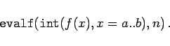
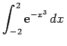
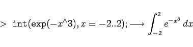
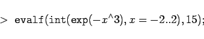
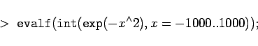
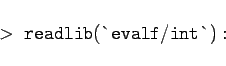
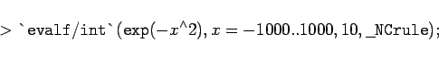
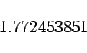

Inhalt Index DeskTop Bronstein

 Numerische Mathematik Nutzung von Computern Anwendung von Computeralgebrasystemen Maple
Numerische Mathematik Nutzung von Computern Anwendung von Computeralgebrasystemen Maple


Die Berechnung bestimmter Integrale ist oft nur numerisch möglich. Das ist der Fall, wenn der Integrand sehr kompliziert aufgebaut ist bzw. wenn die Stammfunktion nicht durch elementare Funktionen ausdrückbar ist. In Maple wird dann der Befehl  dem Integrationsbefehl für die Berechnung des bestimmten Integrals vorangestellt:
|  | (19.291) |
Darauf wird das Integral mit der geforderten Genauigkeit von Maple unter Zuhilfenahme von Näherungsverfahren bestimmt. In der Regel funktioniert diese Methode.
| Beispiel |
|
Berechnung des bestimmten Integrals . Da die Stammfunktion nicht bekannt ist, wird zunächst 

|
In gewissen Fällen versagt diese Methode, insbesondere wenn über große Intervalle zu integrieren ist. Dann kann man versuchen, mit dem Bibliotheksaufruf
| Beispiel |
|
Die Eingabe 



|